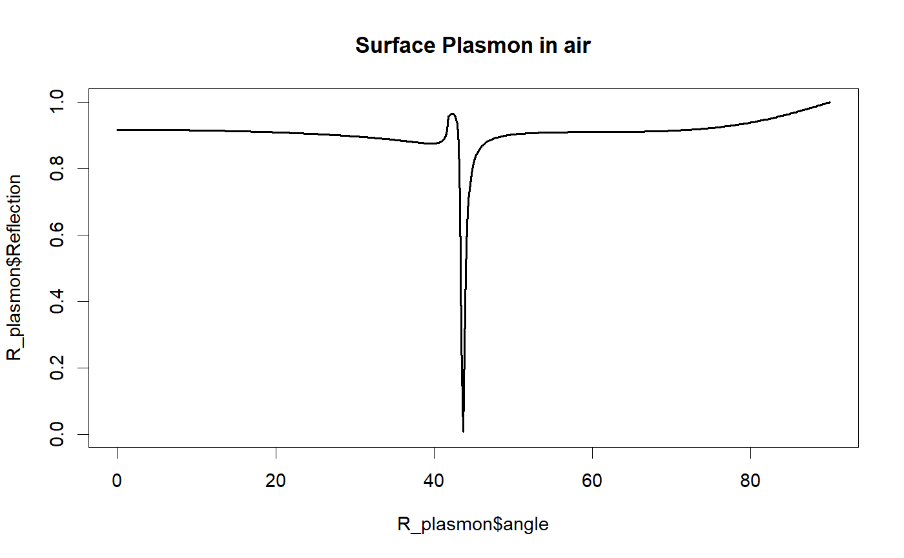

Function to calculate the reflectivity, transmission and absorption as a function of angle for a given multilayer film.
angle_scan(layers, angles = seq(0, 90, length.out = 500), wavelength = 6.33e-07, polarisation = "p", incident_medium.index = complex(real = 1, imaginary = 0), exit_medium.index = complex(real = 1, imaginary = 0), show.progress = F)
| layers | A list object containing the stack parameters. Must include index, thickness and repetitions. See details and examples for more information. |
|---|---|
| angles | The angle range in degrees. The default angle range is from 0 to 90. |
| wavelength | The wavelength in meters. The default is for a HeNe laser (633 nm) |
| polarisation | Linear polarisation of the light. Acceptable arguments are 'p' (Transverse Magnetic) or 's' (Transverse Electric). |
| incident_medium.index | The global incident medium. Default is n=1+0i (air) |
| exit_medium.index | The global exit medium. Default is n=1+0i (air) |
| show.progress | Determine is a progress bar is to be printed to console |
Returns a dataframe with the angle, Refelctivity, Transmission and Absorbtion
The layers list should be constructed like so:
layers <- list(index = ..., thickness = ..., repetitions = ...)
where index and thickness are vectors containing the stack parameters in order from the top interface to the bottom. Repetitions is an integer repeating the stack.
Introduction to Optics 3rd Edition, Pearson international edition by Frank L. Pedrotti, Leno Matthew Pedrotti, Leno S. Pedrotti
layers<-list(index=c(0.13+4i),thickness=c(45e-9),repetitions= 1) R_plasmon<-angle_scan(incident_medium.index = 1.5+0i,exit_medium.index = 1+0i,layers = layers) plot(R_plasmon$angle,R_plasmon$Reflection,type='l',lwd=2, ylim=c(0,1))title("Surface Plasmon in air")